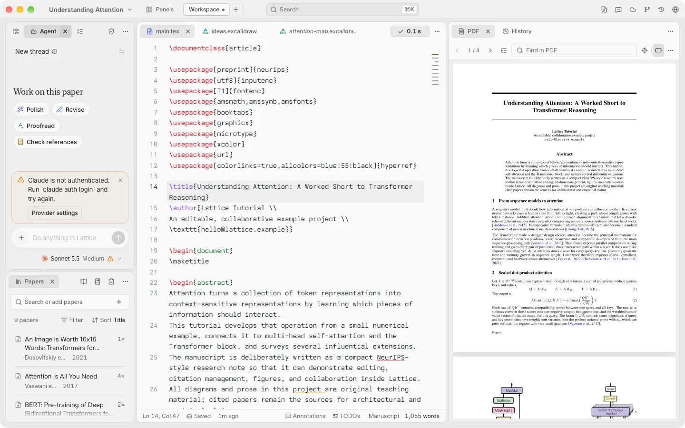

Troubleshooting
The build fails and I don't see why. Read the first problem in the build panel; later ones often follow from it. Open Log for LaTeX's own words. Then try Clean rebuild from the command palette (⌘K). See Building.
"Missing LaTeX dependency" or a package not found. BasicTeX doesn't include every package Overleaf has. Use the problem's install button, or Settings › TeX doctor › Install required tools.
A build can't find LaTeX at all. Open Settings › TeX doctor. If it lists missing tools, install TeX from the Get started checklist or from MacTeX, then reopen the project.
Adding papers or looking up citations doesn't work. These need the small uv tool. Settings › TeX doctor shows whether uv and uvx are there; Install required tools installs them.
The Agent says it isn't signed in. The panel shows which provider is missing a sign-in, for example "Claude is not authenticated". Sign in once in Terminal (claude auth login for Claude Code), then try again, or pick another provider in Provider settings.

Overleaf stopped syncing. Open Settings › Overleaf. If your session expired, choose Reconnect to Overleaf. A file with conflict markers pauses sync for that file until you resolve them.
A panel is gone. Panels › Reset layout brings every panel back. To undo a deleted workspace, use Undo in the notice right away.
I lost text. Open History: every save, every Agent edit and every Overleaf change is there, and Restore this file puts a file back.
Something else is wrong. Help › Report a Problem… saves a redacted log you can attach to an issue, and opens GitHub Issues. Settings › Logs shows the log in the app.